Cone / Cylinder DataBase (desicos.conecylDB)¶
The desicos.conecylDB module includes all the information about cones and cylinders required to reproduce structures that were investigated by many publications and in the context of DESICOS.
It also includes the tools necessary to work with the Imperfection DataBase. Unfortunately, the files composing this database cannot be made available with the repository, but all the tools required to post process an imperfection file had been made available.
Conecyl Data-Base (desicos.conecylDB.conecylDB)¶
- desicos.conecylDB.conecylDB.delete(which, name)[source]¶
Delete an entry to the dynamic database.
Parameters: which : str
A string that can be: ccs, laminaprops, allowables.
name : str
The name of the new entry.
- desicos.conecylDB.conecylDB.fetch(which, local_only=False)[source]¶
Fetches a dictionary from the database
Parameters: which : str
A string that can be: ccs, laminaprops, allowables.
local_only : bool, optional
If only the local data-base should be considered.
- desicos.conecylDB.conecylDB.save(which, name, value)[source]¶
Save an entry to the dynamic database.
Parameters: which : str
A string that can be: ccs, laminaprops, allowables.
name : str
The name of the new entry.
value : object
The object that will be stored in the dictionary pointed by which under the key given by name.
- desicos.conecylDB.conecylDB.update_imps()[source]¶
Returns the updated imperfection definitions from the data-base
Returns: out : tuple
A tuple containing the updated dictionaries with useful data form the data-base. In the description below key corresponds to a ccs entry of the database:
- imps: contains the full path of an imperfection file corresponding to key, accessed doing imp[key]['msi'] or imp[key]['ti']
- imps_theta_z: similar to imps
- t_measured: contains the measured shell thickness for a correponding entry access doing t_measured[key]
- R_best_fit
- H_measured
Cone/Cylinders (desicos.conecylDB.ccs)¶
This static database stores all entries in the dictionary ccs which can be imported as:
from desicos.conecylDB.ccs import ccs
More entries can be added here if one wishes to update the static database.
The entries shown in the Plug-In for Abaqus are those with the corresponding keys listed in include_in_GUI.
Lamina Elastic Properties (desicos.conecylDB.laminaprops)¶
This static database stores all entries in the dictionary laminaprops which can be imported as:
from desicos.conecylDB.laminaprops import laminaprops
In the dictionary laminaprops each entry is stored as a tuple:
- orthotropic material: (
 ,
,  ,
,  ,
,  ,
,
 ,
,  )
) - isotropic material: (
 , ,
, ,  )
)
More entries can be added here if one wishes to update the static database.
Lamina Allowables (desicos.conecylDB.allowables)¶
This static database stores all entries in the dictionary allowables which can be imported as:
from desicos.conecylDB.allowables import allowables
In the dictionary allowables each entry is stored as a tuple:
- (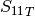, 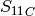, 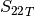, 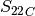, 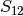, 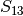)
where  and
and  stand for compression or tensile allowables. More
entries can be added here if one wishes to update the static database.
stand for compression or tensile allowables. More
entries can be added here if one wishes to update the static database.
Fitting Data (desicos.conecylDB.fit_data)¶
This module includes functions used to fit measured imperfection data.
- desicos.conecylDB.fit_data.best_fit_cone(path, H, alphadeg, R_expected=10.0, save=True, errorRtol=1e-09, maxNumIter=1000, sample_size=None)[source]¶
Fit a best cone for a given set of measured data
Note
NOT IMPLEMENTED YET
- desicos.conecylDB.fit_data.best_fit_cylinder(path, H, R_expected=10.0, save=True, errorRtol=1e-09, maxNumIter=1000, sample_size=None)[source]¶
Fit a best cylinder for a given set of measured data
The coordinate transformation which must be performed in order to adjust the raw data to the finite element coordinate system is illustrated below:

This transformation can be represented in matrix form as:
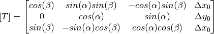
Note that five variables are unknowns:
- the rotation angles
 and
and 
- the three components of the translation 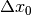, 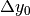 and 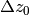
The five unknowns are calculated iteratively in a non-linear least-sqares problem (solved with scipy.optimize.leastsq), where the measured data is transformed to the reference coordinate system and there compared with a reference cylinder in order to compute the residual error using:
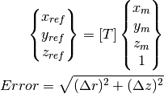
where:
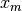, 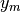 and 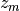 are the data coordinates in the data coordinate system
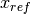 are the data coordinates in the reference coordinate system
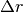 and 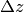 are defined as:

Since the measured data may have an unknown radius
 , the solution of
these equations has to be performed iteratively with one additional
external loop in order to update .
, the solution of
these equations has to be performed iteratively with one additional
external loop in order to update .Parameters: path : str or np.ndarray
The path of the file containing the data. Can be a full path using r"C:\Temp\inputfile.txt", for example. The input file must have 3 columns “


 ” expressed
in Cartesian coordinates.
” expressed
in Cartesian coordinates.This input can also be a np.ndarray object, with
, ,
in each corresponding column.H : float
The nominal height of the cylinder.
R_expected : float, optional
The nominal radius of the cylinder, used as a first guess to find the best-fit radius (R_best_fit). Note that if not specified more iterations may be required.
save : bool, optional
Whether to save an "output_best_fit.txt" in the working directory.
errorRtol : float, optional
The error tolerance for the best-fit radius to stop the iterations.
maxNumIter : int, optional
The maximum number of iterations for the best-fit radius.
sample_size : int, optional
If the input file containing the measured data is too big it may be convenient to use only a sample of it in order to calculate the best fit.
Returns: out : dict
A Python dictionary with the entries:
- out['R_best_fit'] : float
The best-fit radius of the input sample.
- out['T'] : np.ndarray
The transformation matrix as a 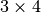 2-D array. This matrix does the transformation: input_pts –> output_pts.
- out['Tinv'] : np.ndarray
The inverse transformation matrix as a 2-D array. This matrix does the transformation: output_pts –> input_pts.
- out['input_pts'] : np.ndarray
The input points in a 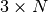 2-D array.
- out['output_pts'] : np.ndarray
The transformed points in a 2-D array.
Examples
- General usage
For a given cylinder with expected radius and height of R_expected and H:
from desicos.conecylDB.fit_data import best_fit_cylinder out = best_fit_cylinder(path, H=H, R_expected=R_expected) R_best_fit = out['R_best_fit'] T = out['T'] Tinv = out['Tinv']
- Using the transformation matrices T and Tinv
For a given input data with 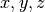 positions in each line:
x, y, z = np.loadtxt('input_file.txt', unpack=True)
the transformation could be obtained with:
xnew, ynew, znew = T.dot(np.vstack((x, y, z, np.ones_like(x))))
and the inverse transformation:
x, y, z = Tinv.dot(np.vstack((xnew, ynew, znew, np.ones_like(xnew))))
- the rotation angles
- desicos.conecylDB.fit_data.calc_c0(path, m0=50, n0=50, funcnum=2, fem_meridian_bot2top=True, rotatedeg=0.0, filter_m0=None, filter_n0=None, sample_size=None, maxmem=8)[source]¶
Find the coefficients that best fit the
 imperfection
imperfectionThe measured data will be fit using one of the following functions, selected using the funcnum parameter:
- Half-Sine Function
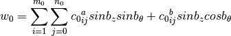
- Half-Cosine Function (default)
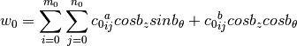
- Complete Fourier Series

where:

where
 represents the difference between the maximum and
the minimum values in the imperfection file.
represents the difference between the maximum and
the minimum values in the imperfection file.The approximation can be written in matrix form as:
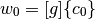
where
![[g]](../../_images/math/e5c181ab30f23cea7c86c455ea6ebc26edff132c.png) carries the base functions and
carries the base functions and  the respective
amplitudes. The solution consists on finding the best that
minimizes the least-square error between the measured imperfection pattern
and the function.
the respective
amplitudes. The solution consists on finding the best that
minimizes the least-square error between the measured imperfection pattern
and the function.Parameters: path : str or np.ndarray
The path of the file containing the data. Can be a full path using r"C:\Temp\inputfile.txt", for example. The input file must have 3 columns “

 ” expressed
in Cartesian coordinates.
” expressed
in Cartesian coordinates.This input can also be a np.ndarray object, with
, , in each corresponding column.m0 : int
Number of terms along the meridian (
).n0 : int
Number of terms along the circumference (
).funcnum : int, optional
As explained above, selects the base functions used for the approximation.
fem_meridian_bot2top : bool, optional
A boolean indicating if the finite element has the
axis starting
at the bottom or at the top.rotatedeg : float, optional
Rotation angle in degrees telling how much the imperfection pattern should be rotated about the
 (or
(or  ) axis.
) axis.filter_m0 : list, optional
The values of m0 that should be filtered (see filter_c0()).
filter_n0 : list, optional
The values of n0 that should be filtered (see filter_c0()).
sample_size : int or None, optional
An in specifying how many points of the imperfection file should be used. If None is used all points file will be used in the computations.
maxmem : int, optional
Maximum RAM memory in GB allowed to compute the base functions. The scipy.interpolate.lstsq will go beyond this limit.
Returns: out : np.ndarray
A 1-D array with the best-fit coefficients.
Notes
If a similar imperfection pattern is expected along the meridian and along the circumference, the analyst can use an optimized relation between m0 and n0 in order to achieve a higher accuracy for a given computational cost, as proposed by Castro et al. (2014):

- desicos.conecylDB.fit_data.fa(m0, n0, zs_norm, thetas, funcnum=2)[source]¶
Calculates the matrix with the base functions for
The calculated matrix is directly used to calculate the
displacement
field, when the corresponding coefficients  are known, through:a = fa(m0, n0, zs_norm, thetas, funcnum) w0 = a.dot(c0)
are known, through:a = fa(m0, n0, zs_norm, thetas, funcnum) w0 = a.dot(c0)Parameters: m0 : int
The number of terms along the meridian.
n0 : int
The number of terms along the circumference.
zs_norm : np.ndarray
The normalized
coordinates (from 0. to 1.) used to compute
the base functions.thetas : np.ndarray
The angles in radians representing the circumferential positions.
funcnum : int, optional
The function used for the approximation (see function calc_c0())
- desicos.conecylDB.fit_data.filter_c0(m0, n0, c0, filter_m0, filter_n0, funcnum=2)[source]¶
Apply filter to the imperfection coefficients

A filter consists on removing some frequencies that are known to be related to rigid body modes or spurious measurement noise. The frequencies to be removed should be passed through inputs filter_m0 and filter_n0.
Parameters: m0 : int
The number of terms along the meridian.
n0 : int
The number of terms along the circumference.
c0 : np.ndarray
The coefficients of the imperfection pattern.
filter_m0 : list
The values of m0 that should be filtered.
filter_n0 : list
The values of n0 that should be filtered.
funcnum : int, optional
The function used for the approximation (see function calc_c0())
Returns: c0_filtered : np.ndarray
The filtered coefficients of the imperfection pattern.
- desicos.conecylDB.fit_data.fw0(m0, n0, c0, xs_norm, ts, funcnum=2)[source]¶
Calculates the imperfection field
for a given inputParameters: m0 : int
The number of terms along the meridian.
n0 : int
The number of terms along the circumference.
c0 : np.ndarray
The coefficients of the imperfection pattern.
xs_norm : np.ndarray
The meridian coordinate (
) normalized to be between 0. and
1..ts : np.ndarray
The angles in radians representing the circumferential coordinate (
).funcnum : int, optional
The function used for the approximation (see function calc_c0())
Returns: w0s : np.ndarray
An array with the same shape of xs_norm containing the calculated imperfections.
Notes
The inputs xs_norm and ts must be of the same size.
The inputs must satisfy c0.shape[0] == size*m0*n0, where:
- size=2 if funcnum==1 or funcnum==2
- size=4 if funcnum==3
Interpolate (desicos.conecylDB.interpolate)¶
This module includes some interpolation utilities that will be used in other modules.
- desicos.conecylDB.interpolate.interp(x, xp, fp, left=None, right=None, period=None)[source]¶
One-dimensional linear interpolation
Returns the one-dimensional piecewise linear interpolant to a function with given values at discrete data-points.
Parameters: x : array_like
The x-coordinates of the interpolated values.
xp : 1-D sequence of floats
The x-coordinates of the data points, must be increasing if argument period is not specified. Otherwise, xp is internally sorted after normalizing the periodic boundaries with xp = xp % period.
fp : 1-D sequence of floats
The y-coordinates of the data points, same length as xp.
left : float, optional
Value to return for x < xp[0], default is fp[0].
right : float, optional
Value to return for x > xp[-1], default is fp[-1].
period : float, optional
A period for the x-coordinates. This parameter allows the proper interpolation of angular x-coordinates. Parameters left and right are ignored if period is specified.
Returns: y : {float, ndarray}
The interpolated values, same shape as x.
Raises: ValueError :
If xp and fp have different length If xp or fp are not 1-D sequences If period==0
Notes
Does not check that the x-coordinate sequence xp is increasing. If xp is not increasing, the results are nonsense. A simple check for increasing is:
np.all(np.diff(xp) > 0)
Examples
>>> xp = [1, 2, 3] >>> fp = [3, 2, 0] >>> interp(2.5, xp, fp) 1.0 >>> interp([0, 1, 1.5, 2.72, 3.14], xp, fp) array([ 3. , 3. , 2.5 , 0.56, 0. ]) >>> UNDEF = -99.0 >>> interp(3.14, xp, fp, right=UNDEF) -99.0
Plot an interpolant to the sine function:
>>> x = np.linspace(0, 2*np.pi, 10) >>> y = np.sin(x) >>> xvals = np.linspace(0, 2*np.pi, 50) >>> yinterp = interp(xvals, x, y) >>> import matplotlib.pyplot as plt >>> plt.plot(x, y, 'o') [<matplotlib.lines.Line2D object at 0x...>] >>> plt.plot(xvals, yinterp, '-x') [<matplotlib.lines.Line2D object at 0x...>] >>> plt.show()
Interpolation with periodic x-coordinates:
>>> x = [-180, -170, -185, 185, -10, -5, 0, 365] >>> xp = [190, -190, 350, -350] >>> fp = [5, 10, 3, 4] >>> interp(x, xp, fp, period=360) array([7.5, 5., 8.75, 6.25, 3., 3.25, 3.5, 3.75])
- desicos.conecylDB.interpolate.interp_theta_z_imp(data, mesh, semi_angle, H_measured, H_model, R_model, stretch_H=False, z_offset_bot=None, rotatedeg=0.0, num_sub=200, ncp=5, power_parameter=2, ignore_bot_h=None, ignore_top_h=None)[source]¶
Interpolates a data set in the 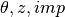 format
This function uses the inverse-weighted algorithm (inv_weighted()).
Parameters: data : str or numpy.ndarray, shape (N, 3)
The data or an array containing the imperfection file in the 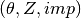 format.
mesh : numpy.ndarray, shape (M, 2)
The new coordinates 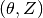 where the values will be interpolated to.
semi_angle : float
The cone semi-vertex angle in degrees.
H_measured : float
The total height of the measured test specimen, including eventual resin rings at the edges.
H_model : float
The total height of the new model, including eventual resin rings at the edges.
R_model : float
The radius (at the bottom) of the new model.
stretch_H : bool, optional
Tells if the height of the measured points, which is usually smaller than the height of the test specimen, should be stretched to fill the whole test specimen. If not, the points will be placed in the middle or using the offset given by z_offset_bot and the area not covered by the measured points will be interpolated using the closest available points (the imperfection pattern will look like there was an extrusion close to the edges).
z_offset_bot : float, optional
The offset that should be used from the bottom of the measured points to the bottom of the test specimen.
rotatedeg : float, optional
Rotation angle in degrees telling how much the imperfection pattern should be rotated about the
(or ) axis.num_sub : int, optional
The number of sub-sets used during the interpolation. The points are divided in sub-sets to increase the algorithm’s efficiency.
ncp : int, optional
Number of closest points used in the inverse-weighted interpolation.
power_parameter : float, optional
Power of inverse weighted interpolation function.
ignore_bot_h : None or float, optional
Nodes close to the bottom edge are ignored according to this meridional distance.
ignore_top_h : None or float, optional
Nodes close to the top edge are ignored according to this meridional distance.
Returns: ans : numpy.ndarray
An array with M elements containing the interpolated values.
- desicos.conecylDB.interpolate.inv_weighted(data, mesh, num_sub, col, ncp=5, power_parameter=2)[source]¶
Interpolates the values taken at one group of points into another using an inverse-weighted algorithm
In the inverse-weighted algorithm a number of
 measured points
of the input parameter data that are closest to a given node in
the input parameter mesh are found and the imperfection value of
this node (represented by the normal displacement
measured points
of the input parameter data that are closest to a given node in
the input parameter mesh are found and the imperfection value of
this node (represented by the normal displacement  ) is
calculated as follows:
) is
calculated as follows:
where
 is the imperfection at each measured point, calculated as:
is the imperfection at each measured point, calculated as: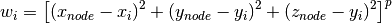
with
 being a power parameter that when increased will increase the
relative influence of a closest point.
being a power parameter that when increased will increase the
relative influence of a closest point.Parameters: data : numpy.ndarray, shape (N, ndim+1)
The data or an array containing the imperfection file. The values to be interpolated must be in the last column.
mesh : numpy.ndarray, shape (M, ndim)
The new coordinates where the values will be interpolated to.
num_sub : int
The number of sub-sets used during the interpolation. The points are divided in sub-sets to increase the algorithm’s efficiency.
col : int
The index of the column to be used in order to divide the data in sub-sets. Note that the first column index is 0.
ncp : int, optional
Number of closest points used in the inverse-weighted interpolation.
power_parameter : float, optional
Power of inverse weighted interpolation function.
Returns: ans : numpy.ndarray
A 1-D array with the interpolated values. The size of this array is mesh.shape[0].
Read/Write (desicos.conecylDB.read_write)¶
This module includes functions to read and write imperfection files.
- desicos.conecylDB.read_write.read_theta_z_imp(path, H_measured=None, stretch_H=False, z_offset_bot=None)[source]¶
Read an imperfection file in the format
, , imperfection.Where the angles
are given in radians.Example of input file:
theta1 z1 imp1 theta2 z2 imp2 ... thetan zn impn
Parameters: path : str or np.ndarray
The path to the imperfection file, or a np.ndarray, with three columns.
H_measured : float, optional
The total height of the measured test specimen, including eventual resin rings at the edges.
stretch_H : bool, optional
Tells if the height of the measured points, which is usually smaller than the height of the test specimen, should be stretched to fill the whole test specimen. If not, the points will be placed in the middle or using the offset given by z_offset_bot and the area not covered by the measured points will be interpolated using the closest available points (the imperfection pattern will look like there was an extrusion close to the edges).
z_offset_bot : float, optional
The offset that should be used from the bottom of the measured points to the bottom of the test specimen.
Returns: mps : np.ndarray
A 2-D array with
, , 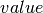 in the first, second
and third columns, respectively.offset_mps : np.ndarray
A 2-D array similar to mps but offset according to place the measured data according to the inputs given.
norm_mps : np.ndarray
A 2-D array similar to mps but normalized in
by the height.
- desicos.conecylDB.read_write.read_xyz(path, alphadeg_measured=None, R_best_fit=None, H_measured=None, stretch_H=False, z_offset_bot=None, r_TOL=1.0)[source]¶
Read an imperfection file in the format
, , .Example of input file:
x1 y1 z1 x2 y2 z2 ... xn yn zn
Parameters: path : str or np.ndarray
The path to the imperfection file, or a np.ndarray, with three columns.
alphadeg_measured : float, optional
The semi-vertex angle of the measured sample.
R_best_fit : float, optional
Best fit radius obtained with functions best_fit_cylinder() or best_fit_cone().
H_measured : float, optional
The total height of the measured test specimen, including eventual resin rings at the edges.
stretch_H : bool, optional
Tells if the height of the measured points, which is usually smaller than the height of the test specimen, should be stretched to fill the whole test specimen. If not, the points will be placed in the middle or using the offset given by z_offset_bot and the area not covered by the measured points will be interpolated using the closest available points (the imperfection pattern will look like there was an extrusion close to the edges).
z_offset_bot : float, optional
The offset that should be used from the bottom of the measured points to the bottom of the test specimen.
r_TOL : float, optional
The tolerance used to ignore points farer than r_TOL*R_best_fit, given in percent.
Returns: mps : np.ndarray
A 2-D array with
, , in the first, second
and third columns, respectively.offset_mps : np.ndarray
A 2-D array similar to mps but with the z coordinates offset according to the inputs given.
norm_mps : np.ndarray
A 2-D array similar to mps but normalized in
by the height
and in and by the radius.
- desicos.conecylDB.read_write.xyz2thetazimp(path, alphadeg_measured, H_measured, R_expected=10.0, use_best_fit=True, sample_size=None, best_fit_output=False, errorRtol=1e-09, stretch_H=False, z_offset_bot=None, r_TOL=1.0, clip_bottom=None, clip_top=None, save=True, fmt='%1.6f')[source]¶
Transforms an imperfection file from the format “
”
to the format “ ”.The input file:
x1 y1 z1 x2 y2 z2 ... xn yn zn
Is transformed to a file:
theta1 z1 imp1 theta2 z2 imp2 ... thetan zn impn
Parameters: path : str
The path to the imperfection file.
alphadeg_measured : float
The semi-vertex angle of the measured sample (it is 0. for a cylinder).
H_measured : float
The total height of the measured test specimen, including eventual resin rings at the edges.
R_expected : float, optional
If use_best_fit==True this will be used as a first estimative that can reduce the number of iterations up to convergence of the best fit algorithms. If use_best_fit==False this will be considered the R_best_fit.
use_best_fit : bool, optional
If True it overwrites the values for: R_expected (for cylinders and cones) and z_offset_bot (for cones), which are automatically determined with functions best_fit_cylinder() and best_fit_cone().
best_fit_output : bool, optional
If the output from the best fit routines should be also returned. In case True the output of this function will be a tuple with (mps, out). For a description of out see best_fit_cylinder().
errorRtol : float, optional
The error tolerance for the best-fit radius to stop the iterations.
sample_size : int, optional
If the input file containing the measured data is too large it may become convenient to use only a sample of it in order to calculate the best fit.
z_offset_bot : float, optional
The offset that should be used from the bottom of the measured points to the bottom of the test specimen.
r_TOL : float, optional
The tolerance used to ignore points farer than r_TOL*R_best_fit, given in percent.
clip_bottom : float, optional
How much of the measured points close to the bottom edge should be cut off, convenient to remove spurious measured data. Example: if the minimum z coordinate of the measured points is 25.4 and clip_bottom=10., all points with z<=35.4 will be ignored.
clip_top : float, optional
Same as clip_bottom, but applicable to the points close to the top edge.
save : bool, optional
If the returned array mps should also be saved to a .txt file.
fmt : str or sequence of strs, optional
See np.savetxt() documentation for more details.
Returns: mps : np.ndarray
A 2-D array with
, , in the first, second
and third columns, respectively.mps, out : np.ndarray, dict
If best_fit_output==True it returns (mps, out) as described above.
- desicos.conecylDB.read_write.xyzthick2thetazthick(path, alphadeg_measured, H_measured, R_expected=10.0, use_best_fit=True, sample_size=None, stretch_H=False, z_offset_bot=None, r_TOL=1.0, save=True, fmt='%1.6f')[source]¶
Transforms an imperfection file from the format: “
 ”
to the format “ ”.
”
to the format “ ”.The input file:
x1 y1 z1 thick1 x2 y2 z2 thick2 ... xn yn zn thickn
Is transformed in a file:
theta1 z1 thick1 theta2 z2 thick2 ... thetan zn thickn
Parameters: path : str
The path to the imperfection file.
alphadeg_measured : float
The semi-vertex angle of the measured sample (it is 0. for a cylinder).
H_measured : float
The total height of the measured test specimen, including eventual resin rings at the edges.
R_expected : float, optional
If use_best_fit==True this will be used as a first estimative that can reduce the number of iterations up to convergence of the best fit algorithms. If use_best_fit==False this will be considered the R_best_fit.
use_best_fit : bool, optional
If True it overwrites the values for: R_expected (for cylinders and cones) and z_offset_bot (for cones), which are automatically determined with functions best_fit_cylinder() and best_fit_cone().
sample_size : int, optional
If the input file containing the measured data is too large it may become convenient to use only a sample of it in order to calculate the best fit.
z_offset_bot : float, optional
The offset that should be used from the bottom of the measured points to the bottom of the test specimen.
r_TOL : float, optional
The tolerance used to ignore points farer than r_TOL*R_best_fit, given in percent.
save : bool, optional
If the returned array mps should also be saved to a .txt file.
fmt : str or sequence of strs, optional
See np.savetxt() documentation for more details.
Returns: mps : np.ndarray
A 2-D array with
, , in the first, second
and third columns, respectively.

Table Of Contents
- Cone / Cylinder DataBase (desicos.conecylDB)
- Conecyl Data-Base (desicos.conecylDB.conecylDB)
- Cone/Cylinders (desicos.conecylDB.ccs)
- Lamina Elastic Properties (desicos.conecylDB.laminaprops)
- Lamina Allowables (desicos.conecylDB.allowables)
- Fitting Data (desicos.conecylDB.fit_data)
- Interpolate (desicos.conecylDB.interpolate)
- Read/Write (desicos.conecylDB.read_write)